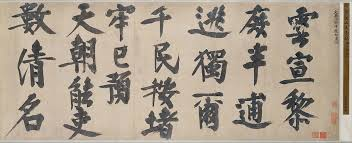
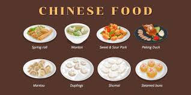
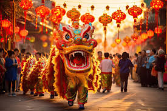
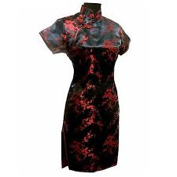

Art et Calligraphie
L'art chinois a évolué à travers des millénaires, notamment la peinture, la poterie et la sculpture. La calligraphie chinoise, un art sacré, est considéré comme l'une des formes les plus élevées de l'expression esthétique, avec des styles variés et une technique très précise.

Philosophie et Spiritualité
La Chine est le berceau de nombreuses philosophies comme le Confucianisme, le Taoïsme et le Bouddhisme. Ces philosophies ont façonné non seulement la pensée chinoise mais aussi sa culture et ses valeurs.
Fêtes Traditionnelles
Les fêtes jouent un rôle essentiel dans la culture chinoise. Le Nouvel An Chinois est sans doute la plus importante. La fête de la Lune, également très populaire, célèbre les récoltes d'automne et l'unité familiale.
Cuisine Chinoise
La diversité de la cuisine chinoise est impressionnante, avec des spécialités propres à chaque région. Les plats varient des célèbres dim sum aux riches saveurs du Sichuan, en passant par les raviolis de Shanghai ou le canard laqué de Pékin.

Musique et Danse
Les instruments de musique traditionnels chinois tels que le guzheng, l'erhu, et la pipa occupent une place importante dans la culture chinoise. Les danses folkloriques comme la danse du dragon et du lion sont également emblématiques des festivités.

Vêtements Traditionnels
Les vêtements traditionnels chinois tels que le Hanfu et le Cheongsam représentent la culture et l'histoire du pays. Ils sont encore portés lors de certaines célébrations culturelles.
